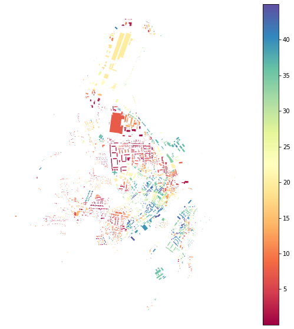
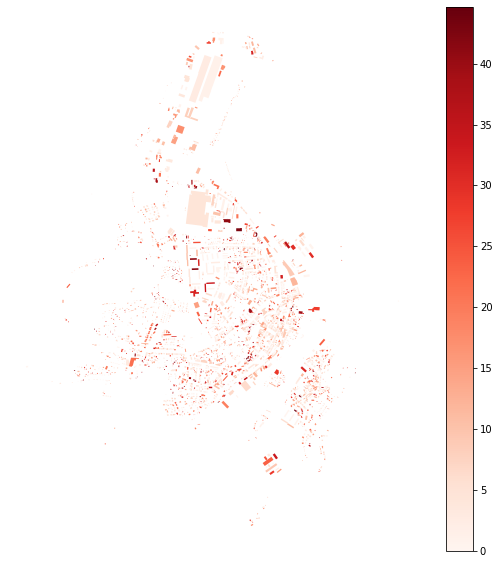
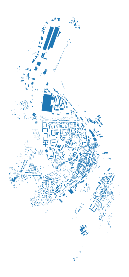
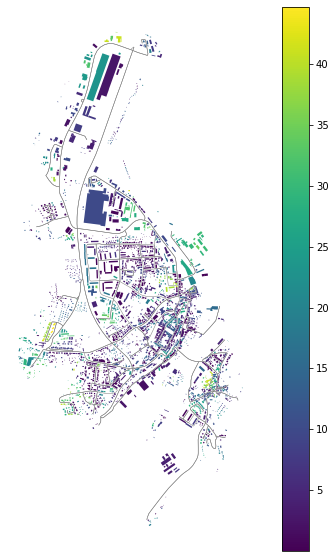
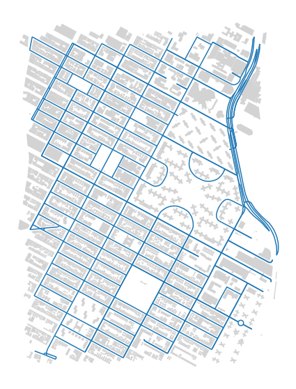
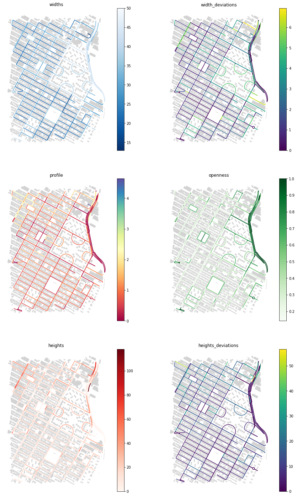

Note
Measuring spatial distribution#
Spatial distribution can be captured many ways. This notebook show couple of them, based on orientation and street corridor.
[1]:
import momepy
import geopandas as gpd
import matplotlib.pyplot as plt
[2]:
import osmnx as ox
gdf = ox.geometries.geometries_from_place('Kahla, Germany', tags={'building': True})
buildings = ox.projection.project_gdf(gdf)
buildings['uID'] = momepy.unique_id(buildings)
limit = momepy.buffered_limit(buildings)
tessellation = momepy.Tessellation(buildings, unique_id='uID', limit=limit).tessellation
Inward offset...
Generating input point array...
Generating Voronoi diagram...
Generating GeoDataFrame...
Dissolving Voronoi polygons...
/Users/martin/Git/geopandas/geopandas/geoseries.py:190: DeprecationWarning: The default dtype for empty Series will be 'object' instead of 'float64' in a future version. Specify a dtype explicitly to silence this warning.
s = pd.Series(data, index=index, name=name, **kwargs)
[3]:
streets_graph = ox.graph_from_place('Kahla, Germany', network_type='drive')
streets_graph = ox.projection.project_graph(streets_graph)
edges = ox.graph_to_gdfs(streets_graph, nodes=False, edges=True,
node_geometry=False, fill_edge_geometry=True)
Alignment#
We can measure alignment of different elements to their neighbours (for which spatial_weights are needed) or to different elements. We will explore cell alignment (difference of orientation of buildings and cells) and street alignment (difference of orientation of buildings and street segments).
Cell alignment#
For CellAlignment we need to know orientations, so let’s calculate them first. Orientation is defined as an orientation of the longext axis of bounding rectangle in range [0,45). It captures the deviation of orientation from cardinal directions:
[4]:
buildings['orientation'] = momepy.Orientation(buildings).series
tessellation['orientation'] = momepy.Orientation(tessellation).series
[5]:
buildings.plot(column='orientation', legend=True, cmap='Spectral',
figsize=(10, 10)).set_axis_off()

CellAlignment requires both gdfs, orientation values for left and right gdf and unique ID linking both gdfs as is in left and right gdf:
[6]:
blg_cell_align = momepy.CellAlignment(buildings, tessellation,
'orientation', 'orientation',
'uID', 'uID')
buildings['cell_align'] = blg_cell_align.series
[7]:
buildings.plot(column='cell_align', legend=True, cmap='Reds',
figsize=(10, 10)).set_axis_off()

No really clear pattern is visible in this case, but it might be in other, especially comparing building orientation with plots.
Street alignment#
Street alignment works on the same principle as cell alignment. What we do not have at this moment is network ID, so we have to generate it and link it to buildings:
[8]:
edges['networkID'] = momepy.unique_id(edges)
buildings['networkID'] = momepy.get_network_id(buildings, edges,
'networkID').values
/Users/martin/Git/momepy/momepy/elements.py:749: UserWarning: Some objects were not attached to the network. Set larger min_size. 311 affected elements
warnings.warn(
Note: UserWarning tells us, that not all buildings were linked to the network. Keep in mind that it may cause issues with missing values later.
OSM network is not ideal in our case, it is missing in part of the study area. Some objects were not attached to the network with min_size defaulting to 100 metres. We can either use larger distance or drop unlinked buildings.
[9]:
buildings_net = buildings.dropna(subset=["networkID"])
[10]:
buildings_net.plot(figsize=(10, 10)).set_axis_off()

StreetAlignment will take care of street orientation (saved under orientations attribute):
[11]:
str_align = momepy.StreetAlignment(buildings_net, edges,
'orientation', 'networkID',
'networkID')
buildings_net['str_align'] = str_align.series
/opt/miniconda3/envs/geo_dev/lib/python3.9/site-packages/pandas/core/frame.py:3607: SettingWithCopyWarning:
A value is trying to be set on a copy of a slice from a DataFrame.
Try using .loc[row_indexer,col_indexer] = value instead
See the caveats in the documentation: https://pandas.pydata.org/pandas-docs/stable/user_guide/indexing.html#returning-a-view-versus-a-copy
self._set_item(key, value)
[12]:
ax = edges.plot(color='grey', linewidth=0.5, figsize=(10, 10))
buildings_net.plot(ax=ax, column='str_align', legend=True)
ax.set_axis_off()

Street profile#
StreetProfile captures several characters at the same time. It generates a series of perpendicular ticks of set length and set spacing and returns mean widths of street profile, their standard deviation, mean height and its standard deviation, profile as a ratio of widht and height and degree of openness. If heights are not passed, it will not return them and profile. We will use Manhattan example to illustrate how it works. Building height column is converted to float and buildings are
exploded to avoid multipolygons.
[13]:
point = (40.731603, -73.977857)
dist = 1000
gdf = ox.geometries.geometries_from_point(point, dist=dist, tags={'building':True})
buildings = ox.projection.project_gdf(gdf)
buildings = buildings[buildings.geom_type.isin(['Polygon', 'MultiPolygon'])]
[14]:
def clean_heights(x):
try:
return float(x)
except ValueError:
return 0
buildings['height'] = buildings['height'].fillna(0).apply(clean_heights)
buildings = buildings.reset_index().explode()
buildings.reset_index(inplace=True, drop=True)
[15]:
streets_graph = ox.graph_from_point(point, dist, network_type='drive')
streets_graph = ox.projection.project_graph(streets_graph)
edges = ox.graph_to_gdfs(streets_graph, nodes=False, edges=True,
node_geometry=False, fill_edge_geometry=True)
[16]:
ax = buildings.plot(figsize=(10, 10), color='lightgrey')
edges.plot(ax=ax)
ax.set_axis_off()

[17]:
profile = momepy.StreetProfile(edges, buildings, heights='height')
/opt/miniconda3/envs/geo_dev/lib/python3.9/site-packages/numpy/lib/nanfunctions.py:1664: RuntimeWarning: Degrees of freedom <= 0 for slice.
var = nanvar(a, axis=axis, dtype=dtype, out=out, ddof=ddof,
/Users/martin/Git/momepy/momepy/dimension.py:641: RuntimeWarning: invalid value encountered in long_scalars
openness.append(np.isnan(s).sum() / (f).sum())
We can assign measrued characters as columns of edges gdf:
[18]:
edges['widths'] = profile.w
edges['width_deviations'] = profile.wd
edges['openness'] = profile.o
edges['heights'] = profile.h
edges['heights_deviations'] = profile.hd
edges['profile'] = profile.p
[19]:
f, axes = plt.subplots(figsize=(15, 25), ncols=2, nrows=3)
edges.plot(ax=axes[0][0], column='widths', legend=True, cmap='Blues_r')
buildings.plot(ax=axes[0][0], color='lightgrey')
edges.plot(ax=axes[0][1], column='width_deviations', legend=True)
buildings.plot(ax=axes[0][1], color='lightgrey')
axes[0][0].set_axis_off()
axes[0][0].set_title('widths')
axes[0][1].set_axis_off()
axes[0][1].set_title('width_deviations')
edges.plot(ax=axes[1][0], column='profile', legend=True, cmap='Spectral')
buildings.plot(ax=axes[1][0], color='lightgrey')
edges.plot(ax=axes[1][1], column='openness', legend=True, cmap='Greens')
buildings.plot(ax=axes[1][1], color='lightgrey')
axes[1][0].set_axis_off()
axes[1][0].set_title('profile')
axes[1][1].set_axis_off()
axes[1][1].set_title('openness')
edges.plot(ax=axes[2][0], column='heights', legend=True, cmap='Reds')
buildings.plot(ax=axes[2][0], color='lightgrey')
edges.plot(ax=axes[2][1], column='heights_deviations', legend=True)
buildings.plot(ax=axes[2][1], color='lightgrey')
axes[2][0].set_axis_off()
axes[2][0].set_title('heights')
axes[2][1].set_axis_off()
axes[2][1].set_title('heights_deviations')
plt.show()
